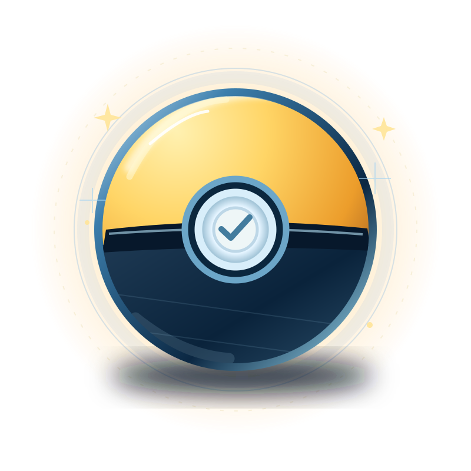

ZekromREIDE 5★
ZekromREIDE 5★TRANSMISSÃO DO DISTRITO MAXGLOBAL · 2026
EVENTO ESPECIAL · GLOBAL
Área Selvagem GO2026
A cidade virou selvagem.
Gigamax, batalhas colossais e Pokémon incríveis tomam o mundo inteiro. Sua expedição urbana começa aqui.
14 e 15 de novembro • horário local
O mundo se encontra aqui.
Explorar a agenda
Dois dias para explorar uma cidade tomada pela Energia Max. Reides, habitats e Pokémon incríveis em uma única expedição.
01 / ROTEIRO GLOBAL
Dois dias. Duas missões.
Veja o que muda nas Reides e nas Batalhas Max. Duraludon Gigamax e Machamp com jaqueta aparecem nos dois dias.
SÁBADO • 14 NOVEMBRO
ZekromREIDE 5★ Kyurem BrancoREIDE 5★
Kyurem BrancoREIDE 5★ Dialga DinamaxBATALHA MAX
Dialga DinamaxBATALHA MAX Duraludon GigamaxBATALHA MAX 6★
Duraludon GigamaxBATALHA MAX 6★ ReshiramREIDE 5★
ReshiramREIDE 5★ Kyurem PretoREIDE 5★
Kyurem PretoREIDE 5★ Palkia DinamaxBATALHA MAXDuraludon GigamaxBATALHA MAX 6★
Palkia DinamaxBATALHA MAXDuraludon GigamaxBATALHA MAX 6★Pokémon incríveis do diaDeslize para explorar →
As Reides de Kyurem Preto e Branco concedem Energia de Fusão. Kyurem obtido em Reides conhece Glaciar. Machamp com jaqueta moderna participa de Reides 3★ nos dois dias. Fundo Especial pode aparecer em capturas elegíveis.
02 / BAIRROS SELVAGENS
A rua pertence a dois mundos.
Os habitats Sólido como Aço e Determinação de Dragão se alternam por horários. Explore os Pokémon previstos para cada um.

Sólido como Aço
Metal, resistência e engrenagens: Pokémon do tipo Aço e companheiros dos espaços urbanos.


Determinação de Dragão
Energia selvagem sobre a cidade. Encontros com Pokémon de linha evolutiva Dragão e companhia.


Selecione um habitat para consultar as espécies.
Aparições temáticas durante horários rotativos. A lista não indica disponibilidade permanente nem garante encontros Brilhantes.
03 / OPERAÇÃO SAFÁRI
A cidade esconde encontros incríveis.
ESTAÇÃO 03 / PROTOCOLO DE CAPTURA
Prepare suas Bolas Safári GO.
Encontros incríveis são raros e mais difíceis de capturar. Procure Pokémon com atributos altos e maior chance de tamanho XL ou XXL.
As Bolas Safári GO expiram ao fim do evento.

Ovos de 10 kmHonedge, Klefki, Drampa e Duraludon.
Capturas com IncensoPokémon incríveis podem aparecer para todos, exceto com Incenso de Aventura Diário.
Golpes especiaisFlygon, Metagross, Haxorus, Hydreigon e outros recebem ataques em destaque.
Rotas e pesquisasEncontros especiais em Rotas e pesquisas de campo temáticas.
04 / PASSE GLOBAL
Vale a pena ter ingresso?
O evento global é acessível a todos. O ingresso libera experiências e bônus adicionais.
Para todos
Grátis- Participação global sem ingresso
- Reides e Batalhas Max do evento
- Bolas Safári GO em fotodiscos
- Pokémon incríveis, habitats e Rotas
- Bônus gerais e pesquisas de campo
Passe Global
R$ 22,90- Pesquisa especial: caminho Aço ou Dragão
- Latias e Latios via Incenso
- Unown D, I, L e W
- Maior chance de Brilhantes*
- Limite de 3.200 Partículas Max/dia
- Até 6 passes de Reide grátis/dia
- 2× doces por captura
- 2× duração do Incenso
- Mais chances de Ovos de 10 km
- Até 6 retratos surpresa/dia
- Módulos Atrair duram 2 horas
- Até 6 trocas especiais/dia
- 50% do custo de Poeira nas trocas
Preço informado para o ingresso global no Brasil. Confirme o valor final na loja oficial antes da compra.A maior chance de Brilhantes não é garantia. Incenso não inclui o Incenso de Aventura Diário para os encontros citados.
05 / ENCONTROS E ESTREIAS
A metrópole tem novos gigantes.
Quatro grandes motivos para atravessar a Área Selvagem.
ESTREIA ABSOLUTA · 6★
Duraludon Gigamax
O arranha-céu vivo chega às Batalhas Max de seis estrelas durante o evento global. Pode aparecer Brilhante.
SÁBADO · 14 NOV
Dialga Dinamax
Estreia em Batalhas Max no sábado.
DOMINGO · 15 NOV
Palkia Dinamax
Estreia em Batalhas Max no domingo.
POKÉMON INCRÍVEIS
Encontros selvagens
Pokémon raros, difíceis de capturar e com maior chance de XL ou XXL.

FERRAMENTA ESPECIAL
Bolas Safári GO
Um impulso nas chances de capturar Pokémon incríveis. Uso limitado ao evento.
06 / RECOMPENSAS GLOBAIS
A aventura começa sem ingresso.
Bônus gerais válidos das 10h às 18h, horário local, em 14 e 15 de novembro.
Outras etapas: Japão e México
Antes da edição global, há etapas presenciais em Sendai/Tohoku, Japão, e na Cidade do México, de 6 a 8 de novembro de 2026.
Essas etapas são eventos distintos, com ingressos e detalhes próprios. Aqui, nosso foco é a versão global.
Fontes e conferência
Conteúdo independente, organizado a partir da página oficial Área Selvagem GO: Global, consultada em outubro de 2026. Programação e benefícios podem ser atualizados pela organização.
A cidade virou selvagem. Você está pronto?
Do aço dos arranha-céus ao céu dos dragões: planeje seu fim de semana sem perder nenhum destaque.